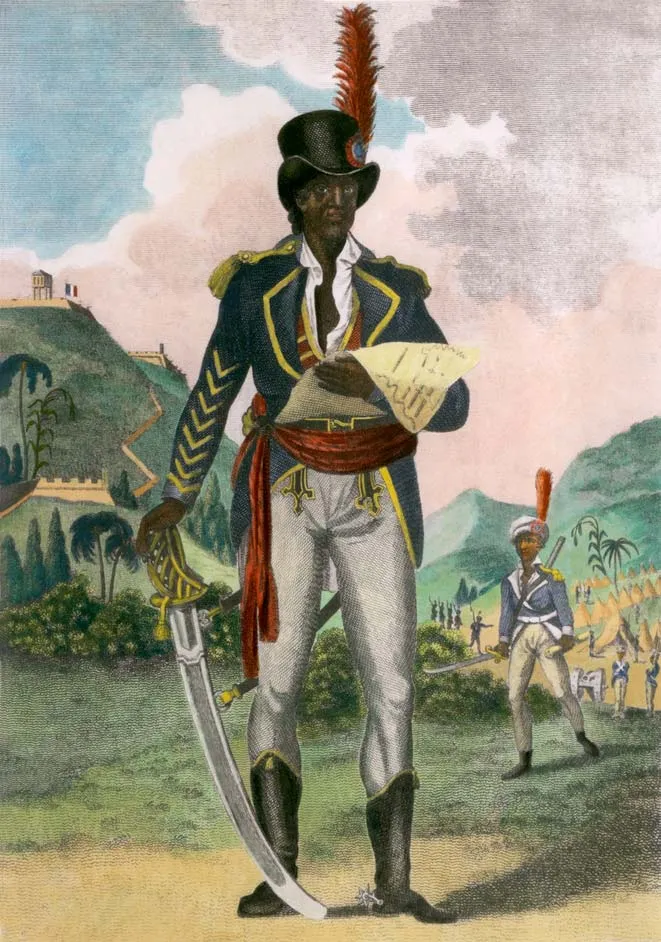
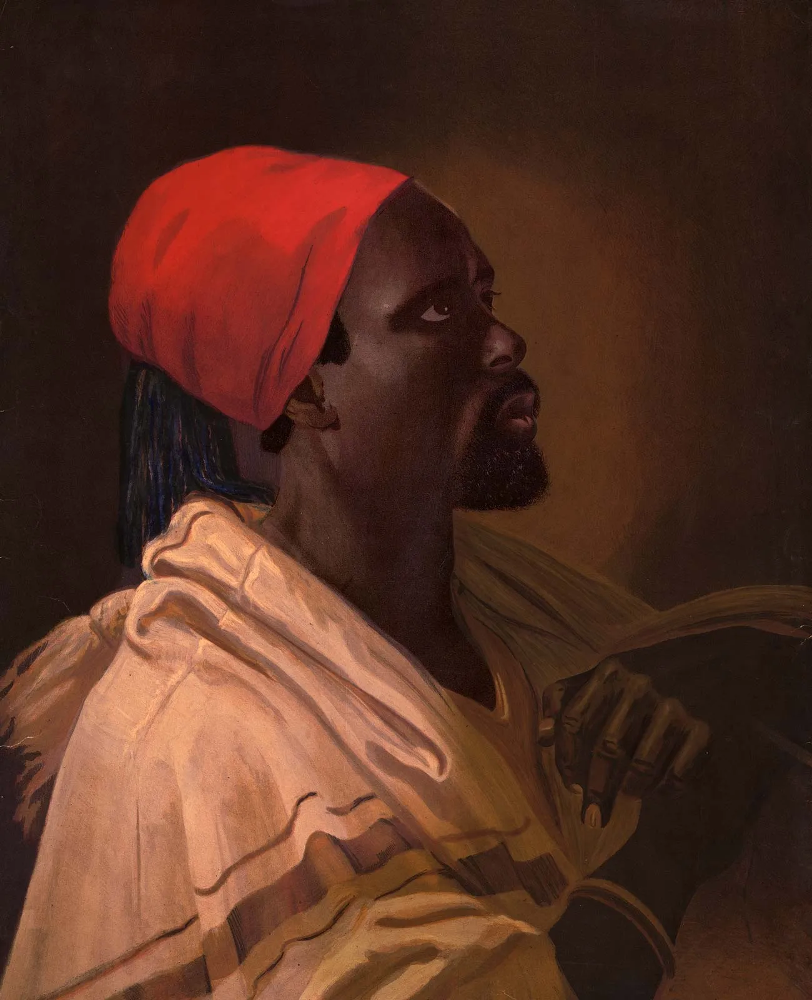
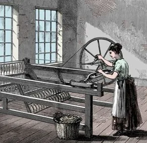
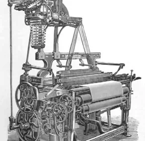
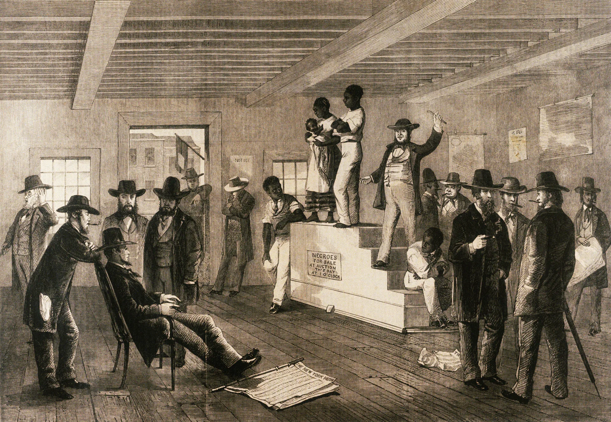
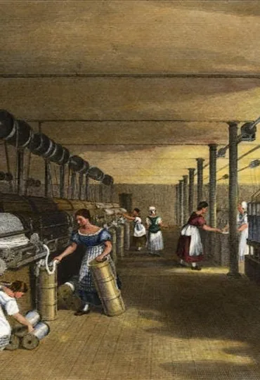
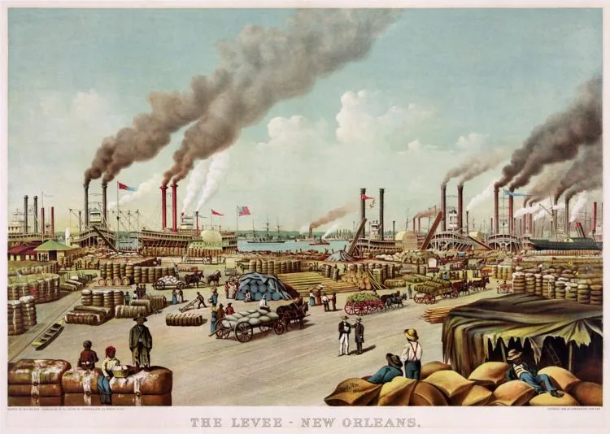

1790-1850
A Historical Analysis


But then, enslaved people revealed they would not wait for gradual emancipation. They wanted freedom NOW! And were willing to fight for it!
White reaction — make slavery harsher!
Right at this moment, a technological innovation and industrial transformation would make slavery more profitable than anyone could imagine —
That innovation was ________________?
The transformation was ________________?



We've established that cotton transformed slavery into an expansionist, aggressive, economically dominant system within the American South. The domestic slave trade created massive forced migration and catastrophic family separations.
Were Northern textile workers complicit in slavery?

Northern industrialization was predicated on Southern slavery—it could not have existed without it.
The North got rich from slavery—its freedom and prosperity rested on human bondage.

This slide’s key idea ties the facts to the bigger course themes. As you review, ask: how does this concept change how we understand the 1790–1850 South, capitalism, and the coming of the Civil War?